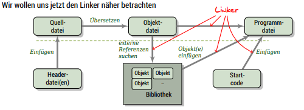
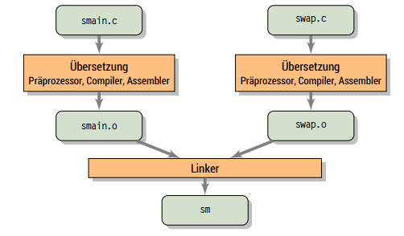
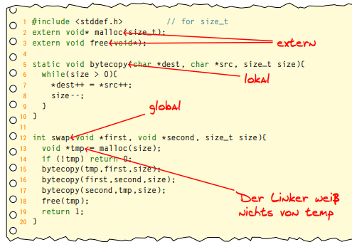
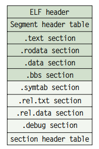
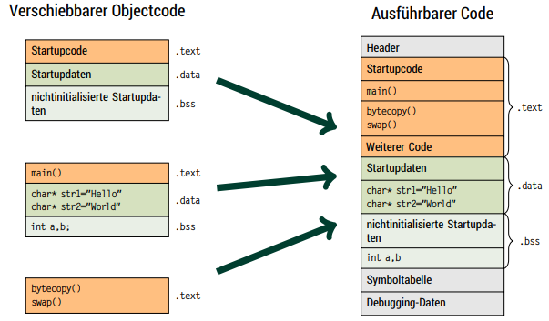
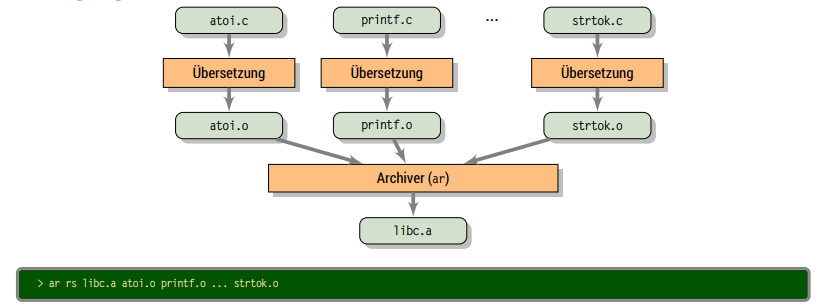

This chapter spans two lectures so lecture 22 and 23 will be pooled into this single blog post.
Linker and Libraries
In the last chapter where we built a game we split functionality into different modules which had their own source file. The linker was responsible for assembling the single modules together. We now want to take a more detailed look into the linker.
The following image shows where the linker is involved:

Now let's look at the following code of a generic swap function:
#include <stddef.h> // for size_t
extern void* malloc(size_t);
extern void free(void*);
static void bytecopy(char *dest, char *src, size_t size) {
while (size > 0) {
*dest++ = *src++;
size--;
}
}
int swap(void *first, void *second, size_t size) {
void *tmp = malloc(size);
if (!tmp) return 0;
bytecopy(tmp, first, size);
bytecopy(first, second, size);
bytecopy(second, tmp, size);
free(tmp);
return 1;
}
The code above can be used with different types as the following program demonstrates.
#include <stdio.h>
int swap(void* first, void* second, size_t size);
char* str1 = "Hello";
char* str2 = "World";
int a, b;
int main() {
printf("1st string: %s, 2nd string: %s\n", str1, str2);
swap(&str1, &str2, sizeof(str1));
printf("1st string: %s, 2nd string: %s\n", str1, str2);
a = 42;
b = 23;
printf("1st integer: %d, 2nd integer: %d\n", a, b);
swap(&a, &b, sizeof(a));
printf("1st integer: %d, 2nd integer: %d\n", a, b);
return 0;
}
Now to get one program file out of our two source code files (swap.c and smain.c) both need to be compiled/translated and then linked together:
cc -std=c99 -Wall euclid.c swap.c smain.c -o sm

and then execute the program file
./sm
1st string: Hello, 2nd string: World 1st string: World, 2nd string: Hello 1st integer: 42, 2nd integer: 23 1st integer: 23, 2nd integer: 42
So let's repeat why we use/need a linker:
-
modularity
- programs can be created as a collection of smaller source files instead of in one giant monolithic file
- enables creation and distribution of commonly used functions/functionality in libraries (eg standard library, math library etc)
-
efficiency
- time: not all of the source code has to be compiled each time
- space: libraries can act as a collection of different functions, but the "finished" program only contains the functions that it needs/uses
And what does the linker really do?
-
Resolution (Auflösung) of symbols
- programs define and reference symbols, i.e. names of variables and functions:
-
int swap() { ... }defines symbolswap -
swap(&a, &b, sizeof(a))references symbolsswap,aandb -
int a;defines symbola
-
- symbol definitions are stored in a symbol table by the compiler
- the symbol table is an array of a special data structure (struct) which stores the name, type, size and location for every symbol
- the linker connects (verknuepft) every symbol reference with exactly one symbol definition
- programs define and reference symbols, i.e. names of variables and functions:
-
Relocation (Verschiebung)
- assembles separate code- and data sections into common sections (gemeinsame Abschnitte)
- moves symbols from their relative position in the object file (.o) to their final storage location in the executable file
- corrects all references to these symbols, so that all the references point to the new/updated/correct location
Linker Symbols
There are three types of linker symbols:
-
global symbols
- symbols that are defined in the module and are usable/referencable by other modules (eg non-static C functions or non-static global variables)
-
external symbols
- global symbols that are referenced in a module, but defined in another module
-
local symbols
- symbols that are defined in a module and only used/referenced in that module (eg functions and global variables that have the attribute
static)
- symbols that are defined in a module and only used/referenced in that module (eg functions and global variables that have the attribute
Also local variables do not create linker symbols (not even local symbols)!

Symbol tables can be inspected with programs like readelf, objdump or nm.
Executable and Linkable Format (ELF)
There are different data formats for object files, for example a.out, COFF, MATCH-O and PE. We'll take a look at ELF which stands for Executable and Linkable Format and was originally developed by AT&T for System V and is nowadays used in many operating systems (i.a. Linux, BSD) for different kinds of binary data:
- movable object files (.o)
- executable program files
- separated object files (.so)
The Executable and Linkable Format consists of the following sections:
- ELF Header: specifies word size, byte alignment, file type, platform etc.
- Segment-Header Table: specifies the page size, sections, segment size and is required for executable files
- .text section: (machine) code
- .rodata section: read only data (jump tables,..)
- .data section: initialized global variables
-
.bbs section: uninitialized global variables
- initialized with 0 in storage
- .symtab section: symbol table
-
.rel.text section: relocation information for code
- addresses of instructions that have to be modified when there's relocation
- instructions for relocating
- .rel.data section: relocation information for variables
-
.debug section: information for symbolic debugging (
cc -g) - Section header table: specifies offset and size of each section

Here's an example of how relocation of movable object code to executable code might look:

Problem of global variables
In the process of linking only symbols are handled, there is no type checking performed. Given this code in 2 files:
// Global 1
#include <stdio.h>
int a;
int b;
void printab1() {
printf("1: a=%d, b=%d\n", a, b);
}
void setab1() {
a = 42;
b = 23;
}
// Global 2
#include <stdio.h>
double a;
int b;
void printab2() {
printf("2: a=%0.0f, b=%d\n", a, b);
}
void setab1() {
a = 42.0;
b = 23;
}
The combined usage of the above code does have its problems though!
// Global
void printab1();
void printab2();
void setab1();
void setab2();
int main() {
setab1();
printab1();
setab2();
printab2();
printab1();
return 0;
}
cc -Wall -Wextra -c -o global1.o global1.c
cc -Wall -Wextra -c -o global2.o global2.c
cc -Wall -Wextra -c -o global.o global.c
cc global1.o global2.o global.o -o global
./global
1: a=42, b=23
2: a=42, b=23
1: a=0, b=23 # ups a=0?
So if possible avoid using global variables. If not, try to use static, initialize global variables on definition and use extern for external variables.
Libraries
How can we package useful code that's commonly used? With the tools we know until now, there are 2 options:
- all functions go into a large source file and therefore in a large object file file as well
- programmers then link this large object file into their programs
- this however is time and space inefficient
- every function goes into its own source file
- programmers then link object files that they've explicitly chosen into their programs
- while this is more efficient than option 1 it is very cumbersome for the programmer
The solution is to use archives also known as (static) libraries. An archive is a single file that holds a collection of multiple object files along side with an index.
The linker is extended in such way that he searches for unresolved references in one or more archives. When the linker finds an archive, he copies the appropriate object file and links it to the program.
There's a tool for creating and managing archives which is called ar.

The archiver allows incremental updates where a changed source file gets compiled and then replaced in the archive.
Every system has a set of libraries. The C standard requires at least two libraries:
-
libc.aorlibgcc.a: standard library, in- and output, memory management,… -
libm.a: floating point math
The standard library (and start up code) is (as long as the option -nodefaultlibs and -nostartfiles is not activated) automatically linked by default.
The linker can use any desired archives. The options are to provide
-
-L{path}the linker searches in {path} for libraries (this option can be given multiple times) -
-l{name}the linker searches the archive filelib{name}.awhen resolving symbols
The following command instructs the linker to include the floating point number math library (libm.a): cc -o myprog mycode.c -lm
-
Dynamic Libraries
However there are some disadvantages to static libraries:
- multiplication (Vervielfachung) of the code in the storage (Massenspeicher) (the standard library for example is used by almost every program)
- multiplication of code in memory
- small fixes in the library code requires explicitly linking every program again
The solution to this problem are dynamic libraries (shared libraries):
- object files are loaded and linked on load/run time
- shared code is loaded into memory/storage only once and then used/shared
- slides: Standard in modernen Systemen u.a für C-Standardbibliothek (Linux:
libc.so)
This is how a dynamic library can be created:
gcc -c -Wall -Werror -fpic swap.c gcc -shared -o libsw.so swap.o
The options have the following meaning:
-
-fpic: creation of position independant code → keine "Umrechnung" beim Laden/Linken nötig -
-shared: creates an independant library
And this is how the library is included:
gcc smain2.c -o sm -L. -lsw
Attention! A dynamically linked program cannot "just be executed":
./sm ./sm: error while loading shared libraries: libsw.so: cannot open shared object file: No such file or directory→ The loader searches for dynamic libraries in predefined directories which are i.a. defined in the system variable
LD_LIBRARY_PATH:export LD_LIBRARY_PATH=$LD_LIBRARY_PATH:. # add current directory to env var ./sm 1st string: Hello, 2nd string: World 1st string: World, 2nd string: Hello 1st integer: 42, 2nd integer: 23 1st integer: 23, 2nd integer: 42
Usage of Libraries
You should always know or be aware of the effect of functions from foreign libraries. Some libraries are just a collection of related functions (eg libmath). Others are a complete framework where the functions can only be used together in a meaningful way (eg many GUI frameworks like GTK+ or Qt).
In the appendix of the lecture script is an example application that uses the ncurses and math library to create an "calculator". ncurses (advancement of curses) utilizes the capabilities of the ANSI terminal and exists for most operating systems. It offers (depending on the version) between 800 to 1000 functions.